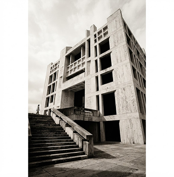

ОСНОВА
Строительство · Айдентика · Сайт
Независимая дизайн-студия
Стратегия, айдентика и цифровой опыт. Помогаем смелым компаниям обрести свой голос — и быть услышанными.

Строительство · Айдентика · Сайт
Промышленность · Упаковка
UX/UI · Цифровой продукт
Айдентика · Арт-дирекшн
E-commerce · Разработка
Брендинг · Digital-опыт
независимой практики
запущенных проектов
человек в одной команде
профессиональных наград
Исследуем контекст, находим отличия и формулируем то, ради чего существует ваш бренд.
Создаём визуальный язык, который узнают без логотипа. От первого знака до целой системы.
Проектируем сайты и сервисы, в которых смыслы идеи встречаются с удобным опытом.
Без чёрного ящика. Вы видите логику каждого решения и влияете на результат.
Слушаем, задаём вопросы, изучаем аудиторию и собираем полный бриф.
Формулируем стратегию и предложение, которое отличает вас от конкурентов.
Разрабатываем визуальную систему — от логотипа до интерфейса.
Передаём материалы, помогаем внедрить и остаёмся рядом после релиза.
Мы — дизайнеры, стратеги и разработчики. Собрались в 2018 году.
«Команда Сдвига увидела в нашем бизнесе то, что мы сами не могли сформулировать. Получился не просто новый стиль — появилось понимание, кто мы и куда идём».